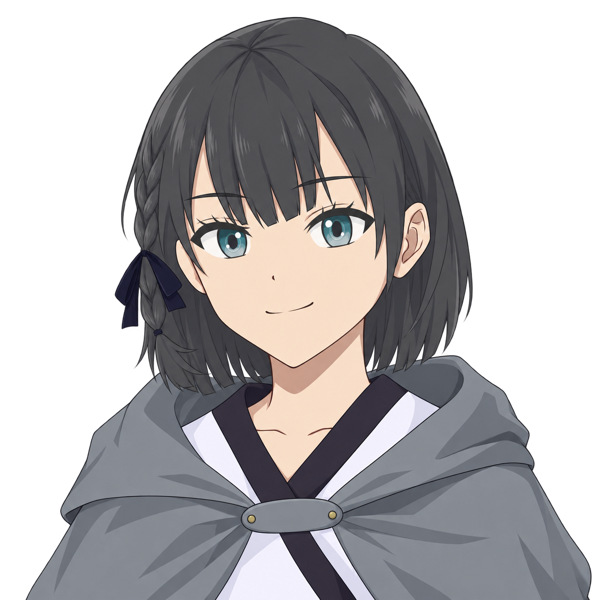
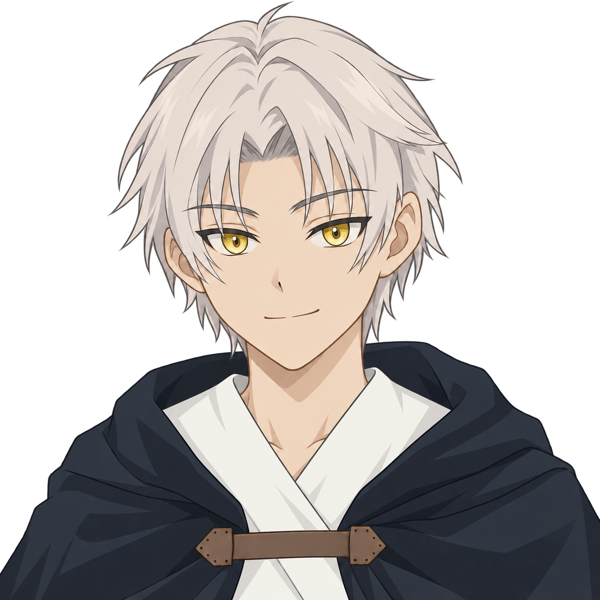
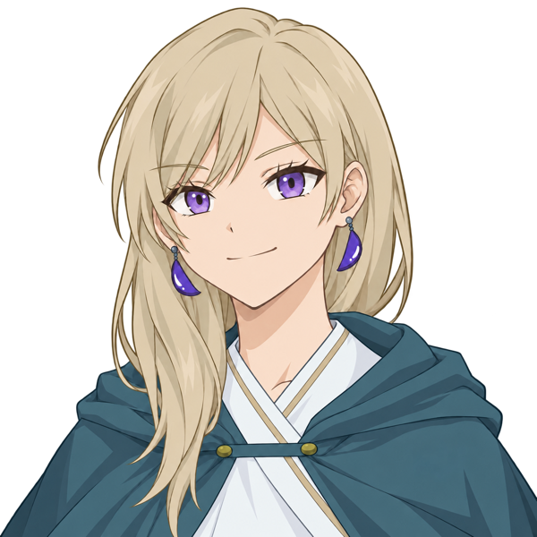
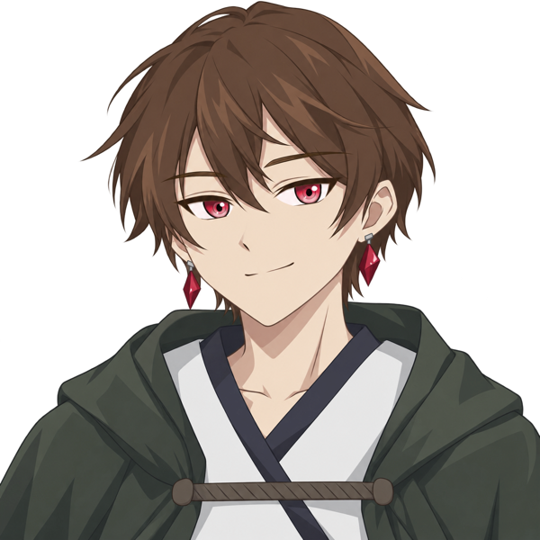
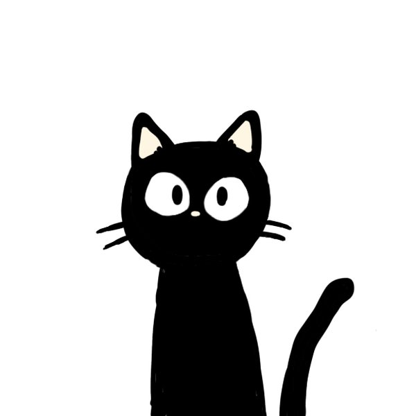
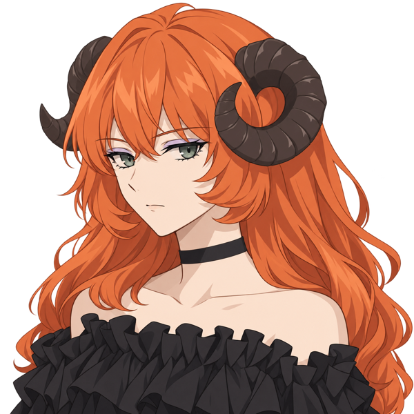
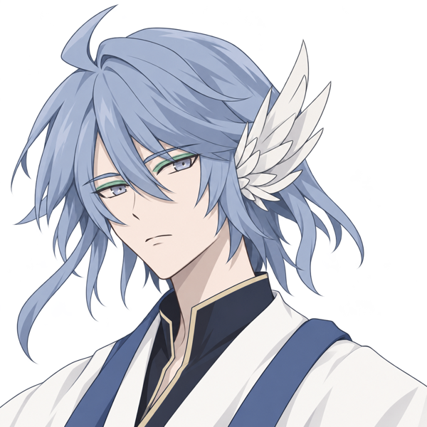

PROTAGONISTS
Choose one at the start of your journey.

Mizuki
ミズキ"—I want to know. About myself.
So I'll go and find out."
A girl who awoke in the Afterworld. Her name was a gift from Rui, whom she had only just met. Beneath her gentle manner lies real nerve—she trusts her intuition and walks straight ahead. Even with her memories gone, one feeling remains: there is someone she wants to see. And so, she sets out.
Water & darkness magic ／ All-rounder, strong in attack

Nagi
ナギ"—Then I'll take that bet.
On this 'role' of mine."
A boy who awoke in the Afterworld. His name was a gift from Kairi, whom he had only just met. He thinks before he acts—yet the one feeling that survived his lost memories, the wish to see someone again, he follows without reason. In search of answers, he sets out.
Water & light magic ／ All-rounder, strong in magic
PARTNERS
Your partner depends on the protagonist you choose.

Rui
ルイ"Do it your way. I'll be here,
keeping a place for you to rest."
Mizuki's partner. A girl who runs the town's apothecary—and the one who gave Mizuki her name. Rough-tongued and caring in equal measure, she gets genuinely angry at Mizuki's recklessness, then pushes her forward all the same. On the road, she supports the party with first aid, cheers, and the occasional well-aimed stone.
Apothecary ／ Mizuki's story

Kairi
カイリ"Just... be careful out there.
I'll be watching over you."
Nagi's partner. A boy who runs the town's apothecary—and the one who gave Nagi his name. Blunt on the surface, he is in truth a soft-hearted worrier whose concern comes out as anger. Still, he never denies what Nagi decides. On the road, he supports the party with first aid and encouragement.
Apothecary ／ Nagi's story
COMPANIONS

Pechi
ペチ"Let's see what meow-you can do, nya."
A talking black cat found napping by a spring deep in the Wavering Woods. Strong souls are scary—but a good petting is irresistible, and Pechi judges your technique with a suspiciously rich vocabulary before deciding to tag along. In battle, Pechi's weapons are speed and the treasure-pilfering "Cat Burglar." And when it truly matters, they say, the cat—transforms.
Beast ／ Nimble trickster

Kaguya
カグヤ"Tell me, dear. Care to play with me?"
A demon of flame who rises from the magma at the deepest point of the Crimson Cavern. Elegant, sharp-witted, and cold toward humankind. Show her your strength, and she may take a liking to you—as an "observation subject." A magic specialist who overwhelms enemies with searing flame and a wide repertoire of ailments.
Demon ／ Flame & ailments

Hayate
ハヤテ"Answer me. What are you
gathering them for?"
A spirit standing alone in the gale at the top of the Tower of Wailing Winds. A man of few words and deep thought, he tests travelers with pointed questions about their journey. Only those who answer with their heart earn his aid. A guardian skilled in wind-born healing and party-wide support.
Spirit ／ Healing & support